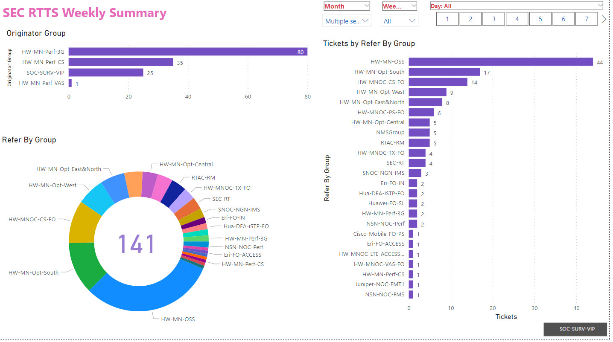
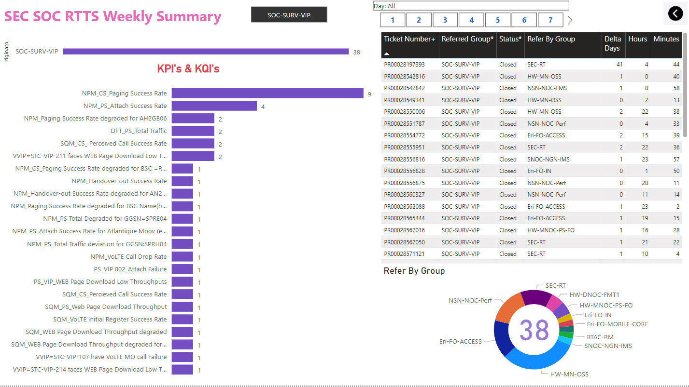
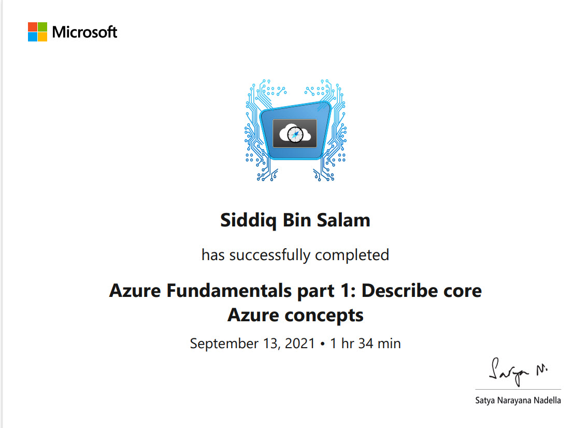
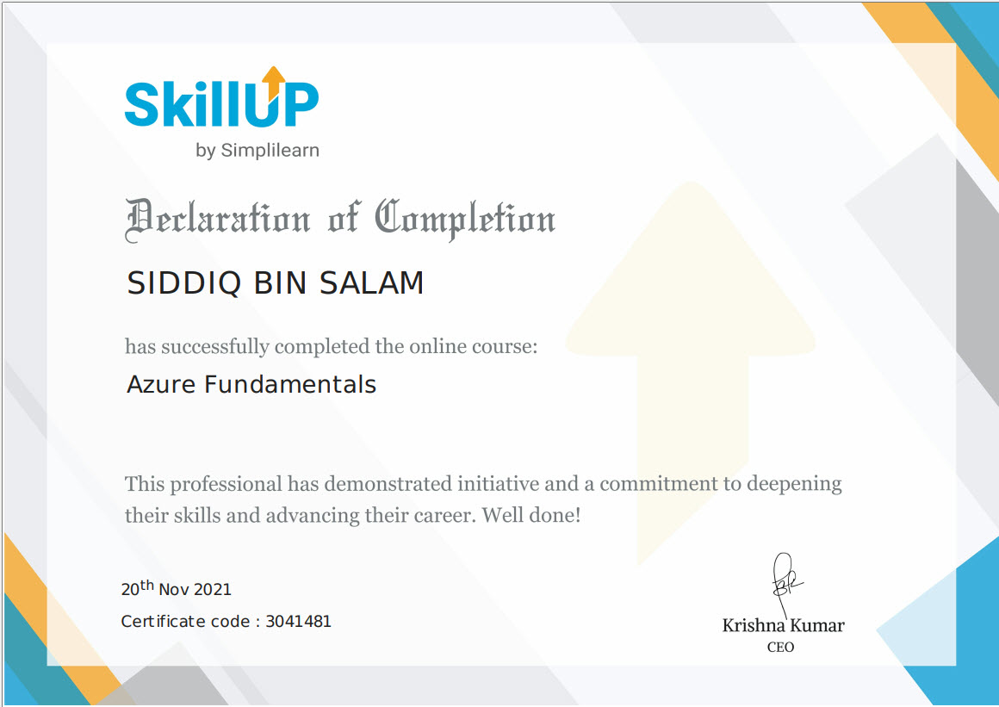
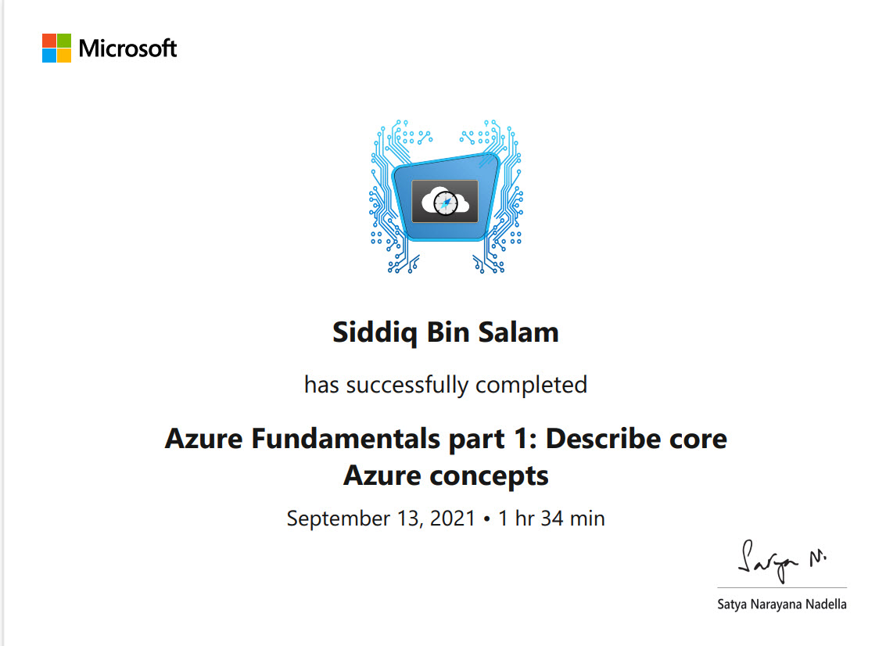
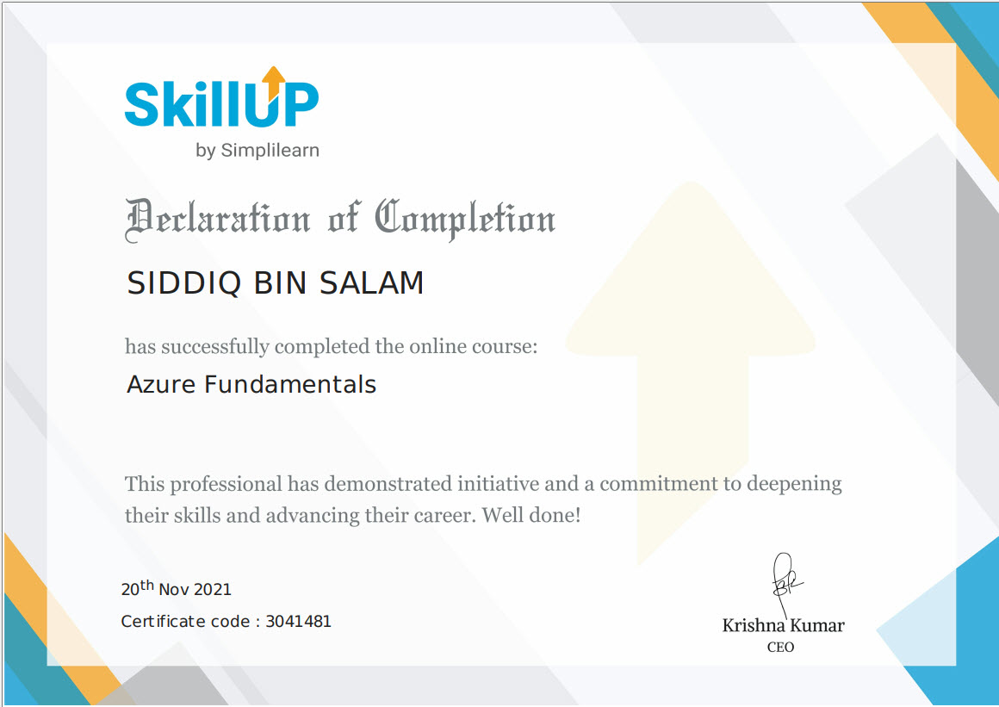

Siddiq Bin Salam
Skills
Data and Statistics with Python
Advanced Python Knowledge
Automation through SQL/Python (Pandas, Numpy)
Data Visualization in Power BI
Python Basics for Data Science Visualizing Data with Python
Machine Learning with Python
Data Science and Machine Learning Capstone Project
Data Visualization through Python Libraries (Matplotlib, Seaborn, Plotly, ggplot)
Data Cleansing through DAX/SQL/Python/Excel
Sr Data Analyst & Reporting Consultant
- Create visually compelling and informative data visualizations, charts, and graphs to effectively communicate data insights and trends.
- Design and develop interactive dashboards and reports that allow users to explore and interact with data.
- Collaborate with different departments to comprehend appropriate requirements.
- Apply data visualization best practices and design principles to ensure clarity, accuracy, and usability of visualizations
- Transform complex data sets into visually appealing and easy-to-understand visual representations
- Use data visualization tools and software, such as, Power BI, or Python libraries (Matplotlib, Seaborn, Plotly), to create visualizations
- Conduct data analysis and exploration to identify patterns, trends, and insights that can be effectively communicated through visualizations
- Collaborate with cross-functional teams to integrate data visualizations into reports, presentations, and business applications
- Present and communicate data visualizations and insights to both technical and non-technical stakeholders
- Build automated reports and dashboards with the help of Power BI and other reporting tools
- Data storage, collection, and data cleaning in SQL/Python/DAX
- Automation of reporting using Python / SQL server and Microsoft office
- Produced detailed and relevant reports for analyzing daily, Weekly, and monthly trends of main KPI of network using Power BI, advanced excel functions
- Maintaining SQL DB and connecting Python to SQL to import and export data
- Responsible for sending Daily/Weekly/Monthly/Evaluation and major Event Reports to relevant stakeholders
- Responsible for designing dashboards for higher management displaying main KPIs and insights for major events to ensure network is stable using Power BI and Python
Education
- MS in Computer and Communications Systems, 2012, Staffordshire, UK (Staffordshire University)
- Bachelor Of Engineering, 2009, India (JNTU University)
Projects
CITC Blackout Report Automation

- Customer requirement was to plot the weekly outages on sites causing blackouts where availability was impacted. This task was accomplished using Power BI, a data visualization and business intelligence tool.
- The process involved the following steps:
- Data Collection: Collecting relevant data on outages and their impact on availability.
- Data Preparation: Cleaning and transforming the data for visualization.
- Power BI Setup: Creating or opening a Power BI project in Power BI Desktop.
- Data Import: Importing the prepared data into Power BI.
- Data Modeling: Defining relationships and creating measures within Power BI.
- Visualization Creation: Creating appropriate visualizations, such as line charts or bar charts, to plot the weekly outages.
- Interactive Features: Leveraging Power BI's interactivity features for data exploration.
- Report Sharing and Collaboration: Publishing the Power BI report for stakeholders to access and collaborate on.
- By utilizing Power BI's capabilities, the resulting visualization provides a clear representation of the weekly outages, allowing stakeholders to analyze the impact on availability more effectively.
Hajj Core & Radio Dashboard Automation

- The Hajj Dashboard was successfully created using Python, SQL, and Power BI.
- Python was used for data processing and manipulation, SQL for data retrieval and storage, and Power BI for data visualization.
- The dashboard served the purpose of providing insights and analysis related to the Hajj event.
- The dashboard included visualizations of Key Performance Indicators (KPIs) for two domains: Radio and Core.
- KPIs for each domain were carefully selected and represented using various charts, graphs, and visual elements.
- The visualizations allowed for a comprehensive understanding of the performance and metrics associated with the Radio and Core domains.
- The Hajj Dashboard was automated to generate hourly reports.
- The automation process involved using Python scripts and SQL queries to retrieve the necessary data and perform calculations or transformations.
- The generated reports were automatically sent via email to the designated recipients on an hourly basis.
- This automation reduced manual effort and ensured timely delivery of the reports.
RTTS Weekly Report
 - The RTTS Ticketing System was integrated with Power BI to generate a weekly automated report.
- The report encompassed data from three domains: Radio, Core, and SOC (Security Operations Center).
- The automation process involved retrieving data from the RTTS Ticketing System using SQL queries or other data retrieval methods.
- The data was then transformed and loaded into Power BI for visualization and analysis.
- The report provided comprehensive insights into the ticketing system, highlighting key metrics and performance indicators for each domain.
- Stakeholders could monitor the status of tickets, track resolution times, identify trends, and assess the overall efficiency of the ticketing process.
- The report generation was automated on a weekly basis, reducing manual effort.
- Stakeholders received timely updates on ticketing system performance.
- Power BI's interactive and visually appealing visualizations facilitated data exploration and insights.
- The report likely included charts, graphs, tables, and other visual elements.
- The automation process utilized scheduling mechanisms to trigger report generation and distribution.
- The weekly automated report enhanced transparency, efficiency, and decision-making related to ticket management and resolution processes.
Certifications
 



Personal Information
- Date of Birth: 27/05/1986
- Marital Status: Married
- Iqama: Transferable
- Driver's License: Valid
- Nationality: Indian
Contact Me
siddiqbinsalam@gmail.com
Riyadh, Saudi Arabia
0533165167